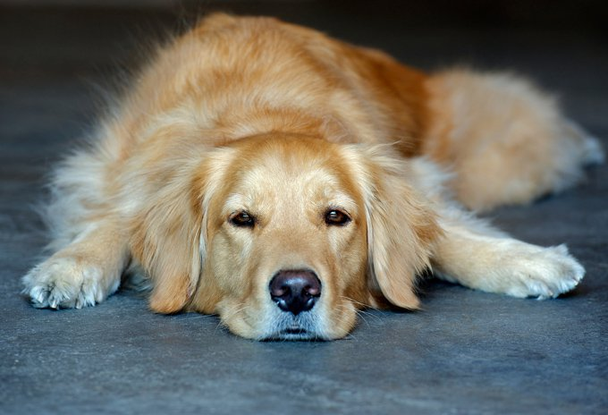
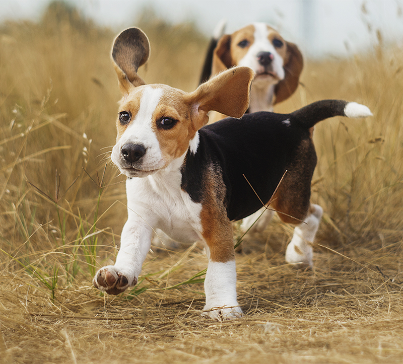
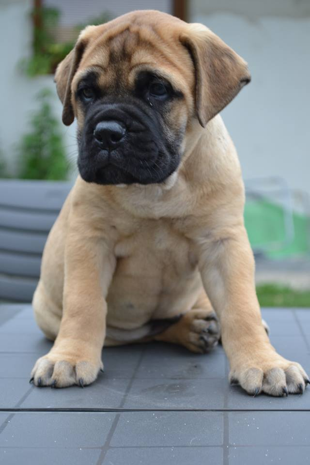
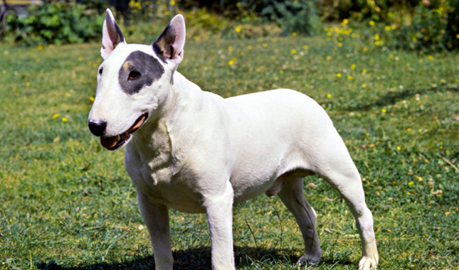

Golden Retriever
O Golden Retriever resulta da união, no final do século XIX, entre um macho Retriever de pelo achatado com uma fêmea Tweed Water Spaniel, raça atualmente desaparecida. Ativo e vigoroso, o Golden Retriever é brilhante caçador rústico, dotado de excelente faro. Também é um belo cão-guia para cegos e de ajuda a deficientes motores, assim como um guardião competente. Calmo, dócil, equilibrado, afetuoso e gentil, o Golden Retriever é muito apreciado como animal de companhia.
| Expectativa de Vida | Altura | Peso | |
|---|---|---|---|
| Mínimo | 10 Anos | 51 cm | 25 kg |
| Máximo | 12 Anos | 61 cm | 32 kg |
Beagle
Normalmente cães extrovertidos, os Beagles são descritos com temperamento alegre. Eles podem ser determinados e teimosos nos seus esforços para atingir o que querem (geralmente comida). Não deixe que o tamanho pequeno ou charme inegável do Beagle enganá-lo, estes cães nascem para caçar. Eles já foi descritos como “um nariz com quatro pernas”, e adoram seguir uma trilha de cheiro. No minuto em que cheiram algo interessante, estão determinados a seguir seus narizes ao invés de obdecer os seus donos.
| Expectativa de Vida | Altura | Peso | |
|---|---|---|---|
| Mínimo | 10 Anos | 51 cm | 25 kg |
| Máximo | 12 Anos | 61 cm | 32 kg |
Bulmastiffe
Maciço e forte, este cão foi "criado" na Inglaterra no começo do século XIX sobre a influência de grandes proprietários de terras, preocupados em proteger os seus bens de ladrões. Ele é um protetor determinado quando necessário e um companheiro amoroso da família o resto do tempo.
| Expectativa de Vida | Altura | Peso | |
|---|---|---|---|
| Mínimo | 8 Anos | 61 cm | 41 kg |
| Máximo | 12 Anos | 68 cm | 59 kg |
Bulterrier
No começo de século XIX, as disputas entre buldogues e touros eram tão populares na Inglaterra que os seus organizadores decidiram criar para essa luta um novo cão, tão agressivo quanto o buldogue, porém mais ágil. Assim nasceu o bulterrier, do cruzamento do buldogue com terrier. Doce com as pessoas, o bulterrier precisa ser socializado cedo para evitar ser um cão agressivo e precisa de uma mão firme.
| Expectativa de Vida | Altura | Peso | |
|---|---|---|---|
| Mínimo | 10 Anos | 53 cm | 20 kg |
| Máximo | 15 Anos | 56 cm | 40 kg |